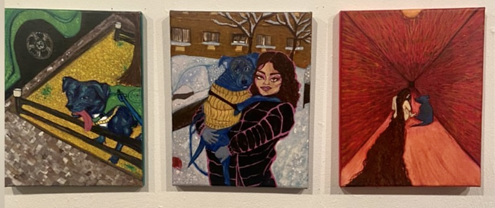

I used to define myself as a traditional artist because most of my work is created in forms of paintings or sculptures, but I think web devlopment has changed that for me. Hopefully you've already taken the liberty to view the other pages so that you can understand my statement a bit better. Web development has become my renewing canvas, with the power of HTML, JS, and CSS I've been able to recreate and destroy as many pages as I please.
My most recent art accomplishment, besides my beautiful website, was having 3 gouache paintings of my family dog showcased at The Living Gallery in Brooklyn, NY.

When my family first adopted Brady, my mother feared his aggressive and playful nature. Oftentimes, I find myself reassuring her that he is nothing but silly and sweet in his own, unique way.
These paintings aim to focus on the vibrancy and range of color. Choosing to place the subjects in a bold enviornment reflects the intensity of emotions Brady brings to me.
Gouache paint on Canvas, 8x10